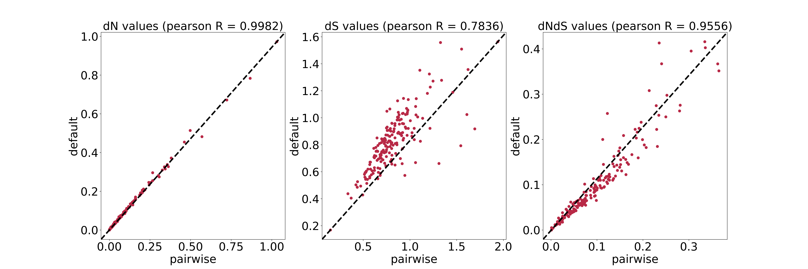
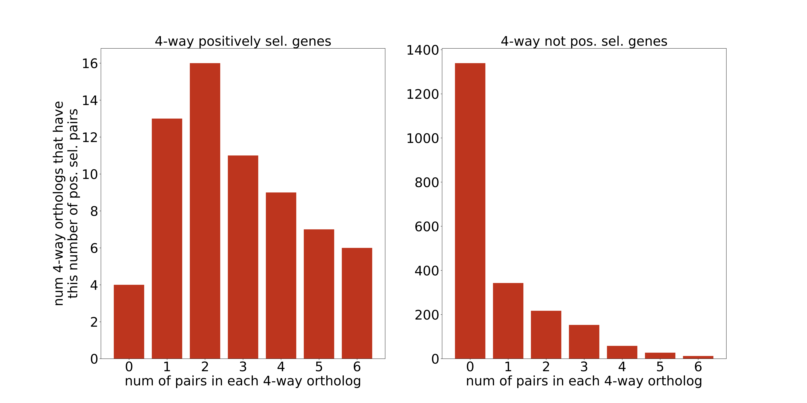
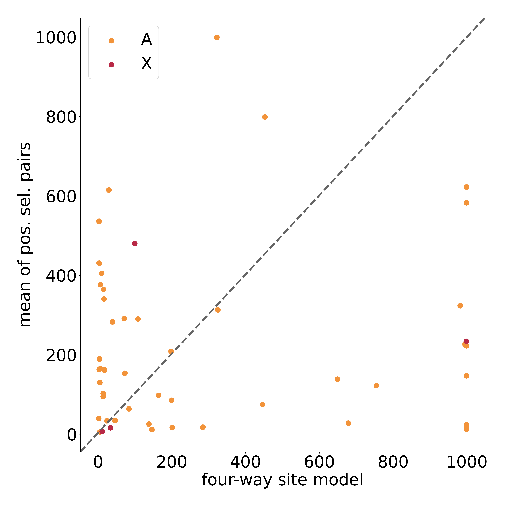

The reviewer brings up criticisms that seem to misunderstand our use of Faster/SlowerX to describe the observed patterns, which can be caused by both adaptive and neutral processes.
It seems like there is a categorical disagreement about our premise and not a misunderstanding of what we are writing.
We are already very clear in the introduction, so it is unclear how to change anything in response to this review.
(DONE by Elina) Clarify and elaborate a bit on the dosage compensation stuff and the lack of information on DC in coleoptera
(or leave out all together? I don't think it's smart to get too into evolution of dosage compensation, that's off topic,
but we also don't really have data to be much more specific than we are now. The main sticking point is the definition of a dosage compensated gene as unbiased)
(DONE) The stuff about the mating system and NeX/NeA. maybe make an infographic about it?
Formatting and copy-editing
(DONE) Update all permutation tests to be tables and not figures to avoid mistakes with sample size numbers due to inconsistent filtering.
Re-do the permutation test based on the complete table to make sure that the filtering is right.
(DONE) Some mistakes in SI figure references
(DONE) Italicise species names in figures
Methodological improvements
Small things that don't necessarily need changes
This doesn't need re-analysis but maybe some changes in the text to clarify.
Age ranks: It was suggested to convert these from categorical variables to true distances like MYA for splits, but this is not possible, see response letter
Some clarification about the ascertainment bias of the old orthologs, also see response letter
The rest is mostly about the right way to use paml to calculate dN, dS and positive selection. A recent paml manual (2024) is here.
My script that automates the entire pipeline to run paml from nucleotide sequences is in the repository linked at the top: src/blast_BRH/calculate_pairwise_dNdS.py
(even though the script is called "_dNdS", it also contains an option to run the site model)
paml branch models: dN/dS
Pairwise estimation with codeml is fine according to the manual above, I should not use YN00, the question is only about the model settings in the config file.
pairwise according to manual: runmode= -2, CodonFreq = 2 (for information on runmode = -2 see p. 35 in the paml manual linked above
(my script already implements the shortening of species names mentioned there).
pairwie how i did it: runmode= 1, CodonFreq = 2 which reads a tree from a tree structure file I generate with FastTree from the pairwise alignment.
I think I do it this way because the script was originally intended for multi-species comparisons and when we decided to restrict to pairwise I never changed it.
(for information on runmode = -2 see p. 19 in the paml manual)
Test results
I will test with a subset of 200 autosomal genes which are all the B_siliquastri_C_maculatus_A-linked_ortholog_9* orthologs.

The correlation is very high but not perfect. I will update the codeml analysis, These things happened:
Slightly lower sample sizes (fewer genes run OK? unsure what the reason is, but the sample sizes now are noticeably different from the codeml runs to detect positive selection.)
There were some very sparse groups of high-dS value points for the Coccinella and Tribolium comparisons that are gone now. Either they match now better
with the rest of the data, or they have moved high enough to be removed by the dS < 2 filter.
Statistically, in the C. maculatus-B. siliquastri comparison with age rank, there is now a significant two-way interaction between age rank and chromosome class
that was not significant before. This does not change any of our conclusions and everything else stays.
Compare with multispecies branch-model
I ran the first version with runmode= 1, CodonFreq = 2 using the 4-speices Bruchini orthologs (see below in the site-models). Still significant enrichment in all cases,
except C. maculatus - C. chinensis, which is borderline nonsignificant but still higher on A than X
See permutation test results
A_obtectus_B_siliquastri : median(dNdS_A)-median(dNdS_X) = 0.01734, mean bootstrap diff = -0.00003 with CI [-0.00878,0.00872] --> SIGNIFICANT
A_obtectus_C_chinensis : median(dNdS_A)-median(dNdS_X) = 0.01332, mean bootstrap diff = 0.00001 with CI [-0.00865,0.00866] --> SIGNIFICANT
A_obtectus_C_maculatus : median(dNdS_A)-median(dNdS_X) = 0.01764, mean bootstrap diff = 0.00004 with CI [-0.00815,0.00822] --> SIGNIFICANT
B_siliquastri_C_chinensis : median(dNdS_A)-median(dNdS_X) = 0.01510, mean bootstrap diff = 0.00003 with CI [-0.00953,0.00958] --> SIGNIFICANT
B_siliquastri_C_maculatus : median(dNdS_A)-median(dNdS_X) = 0.01843, mean bootstrap diff = 0.00003 with CI [-0.00879,0.00884] --> SIGNIFICANT
C_chinensis_C_maculatus : median(dNdS_A)-median(dNdS_X) = 0.01005, mean bootstrap diff = -0.00003 with CI [-0.01094,0.01089] --> (nonsignificant)
paml site models: positive selection
The reviewer is a bit vague here, but we interpret their comments to mean that they think the pairwise comparison does not offer enough statistical power to accurately infer positive selection,
and that we would need multi-species comparisons for that. the site models are described on p. 29 of the above manual, and I can find no mention that there is a minimum number of species
required for sufficient statistical power. It may depend on the amount of sequence divergence as well. I will test the validity of this argument similar as above, by re-running a smaller test set of orthologs. In order to determine the accuracy of our pairwise method, I need to identify which
orthologs are both pairwie 1-to-1 and phylogeny-wide 1-to-1. If my method is correct, I expect to find phylogeny-wide positive selection if at least one pair shows positive selection.
A good description of paml useage is in the methods of Krasovec et al. (2018), but since they do multi-species comparison they use a
clustering approach to identify the 1-to-1 orthologs. I will group 1-to-1 orthologs present in all Bruchini species to compare the results there.
identify Bruchini-wide 1-to-1 orthologs and associate with ortholog pairs
I use src/blast_BRH/make_groups_for_revision.py to make the groups for bruchini
5066 out of 12216 A. obtectus orthologs do not fulfill the requirements for 1-to-1 in all species, (47 were skipped because they were not exclusive to X or A in all species)
7254 1-to-1 orthologs with all 4 species detected (the skipped and included sum up to 12320, not 12216, and I can't figure out why)
6958 Autosomal, 296 X-linked orthologs
Make multifasta files for each ortholog with src/blast_BRH/make_pairwise_BRH_fasta_files.py
run the site model for the Bruchini-wide pairs
compare the new positive selection results with the original pairwise results and see if X is enriched for positively selected genes. There are two model-LRT comparisons
that can be used to test this: H0(M1a) vs. H1(M2a) which is more stringent, and H0(M7) vs. H1(M8) which is less stringent, I try for both.
Less stringent, more likely to give false positives
Autosomes: 1749 under pos. sel, 4752 not
X-chromosome: 76 under pos. sel, 198 not
After BH correction for multiple testing: not much reduced, an ok amount of orthologs left
Autosomes: 1675 under pos. sel, 4826 not
X-chromosome: 74 under pos. sel, 200 not
No enrichment of positively selected genes on the X (code in src/plotting/plot_revision_test.py)
bootstrap_pos_sel(X_data={"pos_sel" : 74 , "non_pos_sel" : 200}, A_data={"pos_sel" : 1675 , "non_pos_sel" : 4826}, num_permutations=10000)
"""
mean(pos_sel_A)-mean(pos_sel_X) = -0.01242
mean bootstrap diff = 0.00046 with CI [-0.05247,0.05339] --> (nonsignificant)
"""
More stringent, less likely to give false positives
Autosomes: 182 under pos. sel, 5531 not
X-chromosome: 6 under pos. sel, 268 not
No enrichment of positively selected genes on the X (code in src/plotting/plot_revision_test.py) Numbers are from data subset used before.
bootstrap_pos_sel(X_data={"pos_sel" : 6 , "non_pos_sel" : 268}, A_data={"pos_sel" : 60 , "non_pos_sel" : 1881}, num_permutations=10000)
"""
mean(pos_sel_A)-mean(pos_sel_X) = 0.00901
mean bootstrap diff = -0.00006 with CI [-0.02177,0.02166] --> (nonsignificant)
"""
After BH correction for multiple testing: too few genes left!
Autosomes: 61 under pos. sel, 5646 not
X-chromosome: 1 under pos. sel, 273 not
I will use H0(M7) vs. H1(M8). After multiple testing correction, H0(M1a) vs. H1(M2a) has so few genes under positive selection
it is mostly useless for analysis. Neither shows a significant difference in the proportion of genes under positive selection between X-chromosome and autosomes.
Compare the results of the 4-way 1-to-1 orthologs with the pairwise comparisons
I am checking for every 4-way ortholog, how many of the associated 6 pairs are under positive selection
The distributions are very similar (mind different axis ranges though), so it is likely true that the pairwise analysis is inappropriate for the site model.
Most orthologs that are positively selected in the four-way comparison have at least one positively selected pair in them, which is better than the M7-M8 comparison, but
still does not correlate well.

Even when downsampling the pairwise analysis to only the orthologs that are also part of the 4-way ortholog sets in Bruchini does not change the
pairwise result, still a significant enrichment of positively selected genes on the X.
Toggle down for plot and reampling test
Everything stays the same just the sample sizes get smaller.
A_obtectus vs. B_siliquastri median(bin_A)-median(bin_X) --> -0.0549, mean bootstrap diff = 0.00012 with CI [-0.02964,0.02989] --> SIGNIFICANT
A_obtectus vs. C_chinensis median(bin_A)-median(bin_X) --> -0.0339, mean bootstrap diff = -0.00000 with CI [-0.02765,0.02765] --> SIGNIFICANT
A_obtectus vs. C_maculatus median(bin_A)-median(bin_X) --> -0.0357, mean bootstrap diff = 0.00015 with CI [-0.02352,0.02382] --> SIGNIFICANT
B_siliquastri vs. C_chinensis median(bin_A)-median(bin_X) --> -0.0575, mean bootstrap diff = -0.00005 with CI [-0.03679,0.03669] --> SIGNIFICANT
B_siliquastri vs. C_maculatus median(bin_A)-median(bin_X) --> -0.0445, mean bootstrap diff = -0.00039 with CI [-0.03154,0.03076] --> SIGNIFICANT
C_chinensis vs. C_maculatus median(bin_A)-median(bin_X) --> -0.0718, mean bootstrap diff = -0.00044 with CI [-0.04355,0.04266] --> SIGNIFICANT
I am testing how correlated the 4-way ω0 are with the mean ω0 of all associated pairs and it's bad :(

McDonald-Kreitmann test for positive selection
This did not work out with our deadline but i really tried. There are existing software packages, but none of them work with existing aligned orthologs (npstat requires WGA for divergence instead) and
pool-seq for polymorphism (MKado requires individual sequencing). I would have to write something from scratch to make the 2-way contingency table by counting the SNPs in the exon regions
from the pool seq and counting the divergent sites from the codon-based ortholog alignments and that is super difficult to get right i think and would therefore probably take a long time.
npstat using whole genome alignment (divergence) and mpileup (polymorphism)
Since it seems like the site-model is out, I will run the MK test instead and compare each species to C. maculatus instead.
Martyna has poolseq data (pools of 50, see paper methods),
which needs to be treated carefully for the MK test. I will use npstat.
The pipeline requires mpileup files which have mapping-information on each read of the assembly. It usually works in whole-genome windows, but
if a gff file is given it looks at coding regions and i can use the counts of synonymous and nonsynonymous substitutions for the MK test
Make npstat singularity image
The installation instructions are about a docker image but since uppmax doesn't like those I will do the same thing as i did for braker and convert
it to singularity using a docker container locally on macos.
(The known issue i have with macos blocking docker are fixed with the instructions in this github issue)
see details
I will use the same pipeline as for making the BRAKER3 singularity image for chapter1, here
this is all run in the directory where the scripts are to ensure hardcoded paths function.
clone the git directory like described in the pipeline link above and do docker build -t npstat .
make the singularity image with singularity in a docker container: docker build -t npstatsingularitybuild -f docker2sif.Dockerfile .
actually run the container in the command line with mounts /var/run/docker.sock:/var/run/docker.sock
(has to have some weird dir binding because of macos) and ~/singularity_output:/output
get the image out of the docker container: docker cp npstatsingularitybuild:/root/npstat.sif ./npstat.sif and copy to uppmax
verify with command singularity run --rm npstat → works!
Convert coordinates of the pileup file to the superscaffolded assembly
use crossmap (pip3 install CrossMap) to convert bed file python -m CrossMap.crossmap bed utg_to_superscaffold.chain UF-2981-ANC_S1_L001.bed UF-2981-ANC_S1_L001_superscaffolded.bed
Make a pileup with
bcftools mpileup -f assemblies/C_maculatus.fasta.masked UF-2981-ANC_S1_L001.superscaffolded.bam > UF-2981-ANC_S1_L001.superscaffolded.mpileup
Make whole genome alignment for outgroup with last
I will use last from this module LASTZ/1.04.22-GCCcore-13.3.0
(make-installed with this tutorial), the pipeline is here: bash/MK_test/align_outgroup_npstat.sh
and the documentation is here. I run all of it in the same
directory as the assemblies otherwise it has some problem with the softlinks. it also needs a newer C++ version GCCcore/14.3.0
make database from reference genome with lastdb
train parameters based on outgroup query with last-train. I will be heavily inspired by the section in their documentation that
explains how they did human vs. lemur genomes for picking the parameters
actually run the alignment with lastal, again basically copied from their human/lemur alignment in the documentation.
I am also making the dotplot
Convert .maf alignment to gap-filled fasta with the same coordinates as the reference C. maculatus genome using
mafTools. it is python2.7 so i will use Python/2.7.18-GCCcore-13.3.0.
install mafTools
it is python2.7 so i will use Python/2.7.18-GCCcore-13.3.0 and make a virtual environment in /proj/coleoptera-genomics-2025/snic2021-6-30/Milena/python_venvs
numpy and scipy are dependencies and i will install the most recent python2.7 compatible versions:
pip install "numpy==1.16.6" and pip install "scipy==1.2.3"
The sonLib depencency has to be installed in a sister-directory as per the instructions and that seems to work with also just make
The path is: /proj/coleoptera-genomics-2025/snic2021-6-30/Milena/software_install/mafTools/mafTools/bin/mafToFastaStitcher
Run npstat
I will use the above created pileup file, as well as the gff annotation and ortholog information for divergence. The arguments are these:
-outgroup fasta alignment in reference assembly coordinates
-annot is the C. maculatus Lome gff3 genome annotation
-n 50 for the sample size, which is the number of individuals in the pool
-nolowfreq 3 is a minimum read support threshold for each SNP, and read for depths over 100 it is recommended to set it to 3
-maxcov 300 the default is 100 but just in case the coverage of this is really very high i will also set the maximum very high
MKado using divergence and polymorphism vcf (not suitable for poolseq as vcf)
This is the first attempt with mkado python library that does not work for poolseq!
This is the pipeline to get polymorphism and divergence data in the form of vcf files and then run the test for all C. maculatus genes:
Get ancestral polymorphisms
Martyna has poolseq data, but the SNPs are on the old assembly,
here /proj/coleoptera-genomics-2025/snic2021-6-30/Martyna/variant_calling/calls/intersection. It is an intersection of calls from PoolSNP and Freebayes, and the two files named
*shared.vcf contain 9225886 sites (grep -v "^#" file.vcf | wc -l), which is the number martyna mentions in her manuscript so these are the right ones.
I will filter since we don't care about SNPs from the selection lines. I only use ANC column and remove all sites where ANC has no data. module BCFtools/1.22.1-GCC-13.3.0
I am going with freebayes for no particular reason, I just had to pick one. The second line does not make a difference and could be skipped.
Convert population-level VCF to my assembly Use the AGP file (/proj/coleoptera-genomics-2025/snic2021-6-30/Milena/chapter4/PhD_chapter4/mTOR_annotation/data/SALSA_superscaffolding_contig_coordinates.agp)
to convert the SNP coordinates. (lifted 7502722 variants, skipped 1723164 on unplaced contigs)
I asked AI for a pipeline:
convert agp to chain file with agp_to_chain.py from remap-gff3See details
There is something wrong with this script, all - strands convert the coordinates wrong and are off by 1 in either direction. This can be fixed with an awk script:
I then remove the old one and replace it with the new.
Liftover vcf with chain file using picard (module picard/3.4.0-Java-17, this needs to be run as a slurm job, takes quite a bit of memory and also like 15 mins.)
PhD_chapter3/bash/MK_test/liftover_SNPs.sh. I also compressed the file with bgzip (not gzip!).
Check if it worked by matching vcf ancestral nucleotides with assembly nucleotides (should be identical if all the coordinate conversion was right)
using check_AGP_conversion_of_VCF.py(this script was created by Claude code and is 100% correct in non-superscaffolded assembly and original freebayes vcf)
Check the results for the superscaffolded assembly → worked!
Run MK test use the mkado python library to run the MK test for all species pair comparisons with C. maculatus.
Requires python3.12+ and the most recent version on uppmax is Python/3.13.5-GCCcore-14.3.0 → make mkado_venv → pip install mkado
OrthoMaM mode would be ideal but there is technical problems:
There is a specific mode to work with population-level polymorphisms and ortholog-alignments to the outgroup, which is exactly my situation:
OrthoMaM
It makes codon-based alignments based on the annotated ortholog cds sequence to get the divergence, and then uses the vcf to create polymorphism sequences.
This workflow makes my data compatible with mkado batch.Unfortunately, according to the documentation there is supposed to be a script to make
polymorphism sequences from the vcf but that does not actually exist so I can't use it. mkado vcf is also not a viable option, because the species divergence is too high for a reliable whole-genome alingment that can call SNPs. (I think?
maybe CACTUS or some other aligner that is not minimap would do a better job?)
I will use mkado batch still, and make the polymorphism sequences with my own pipeline based on making consensus sequences. Since
my SNP data is from a pool of multiple individuals that cannot be separated after the fact, I will treat them like one sample with many SNPs
for the purposes of this pipeline.
Pipeline:
This also requires samtools SAMtools/1.22.1-GCC-13.3.0 and gffread gffread/0.12.7-GCCcore-13.3.0
Keep only SNPs, not indels: bcftools view -v snps freebayes_superscaffolded.vcf.gz -O z -o freebayes_superscaffolded.snps_only.vcf.gz
and then index with bcftools index
Make consensus sequences with bcf consensus (only one sample: ANC, see above)
for sample in $(bcftools query -l freebayes_superscaffolded.snps_only.vcf.gz); do
echo $sample
bcftools consensus -f ${ASS_DIR}C_maculatus.fasta.masked -s "$sample" -I freebayes_superscaffolded.snps_only.vcf.gz > ${sample}.fasta
done
Extract cds from consensus sequences with annotation